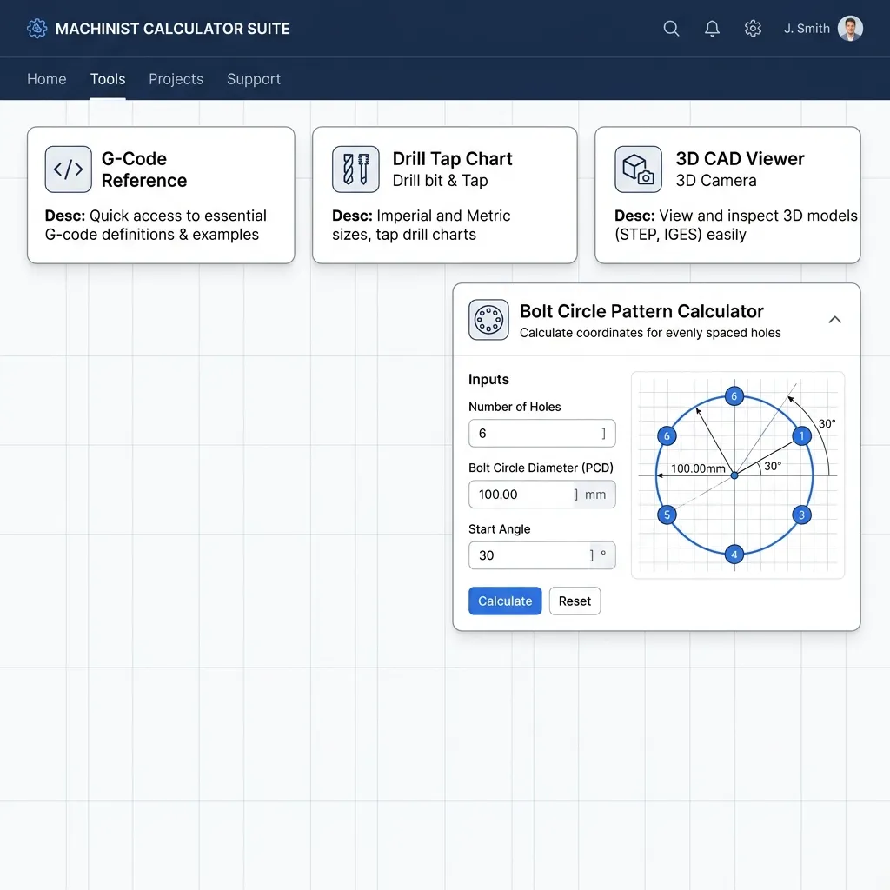
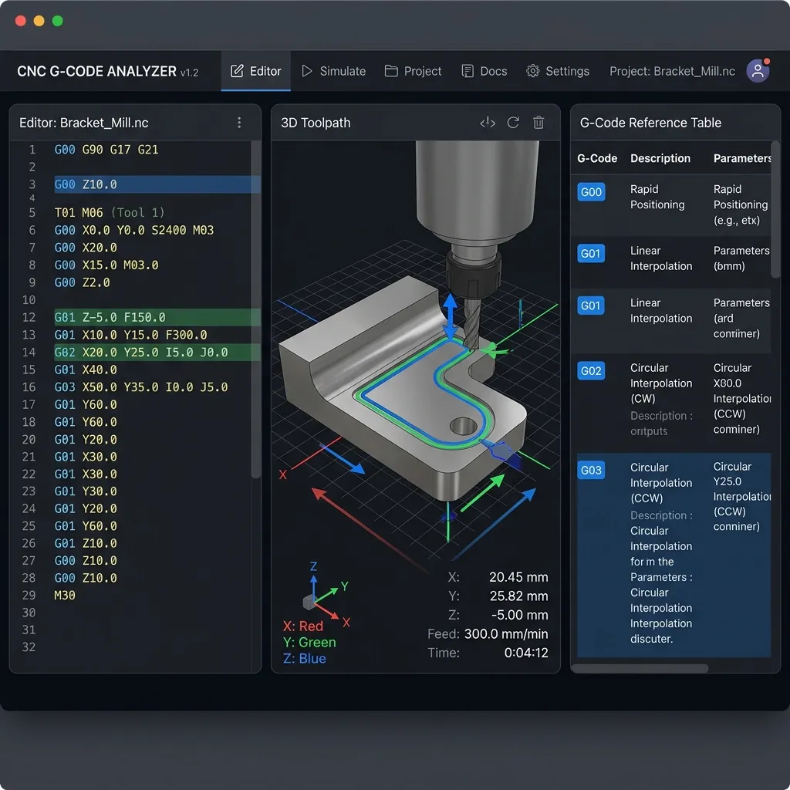

In modern CNC programming and precision metalworking, the ability to rapidly convert blueprint angles and linear dimensions into machine coordinate data is the primary differentiator between an entry-level operator and a master machinist.
Every day on the shop floor, setup technicians and programmers confront blueprints calling out angled cuts, tapers, bevels, and complex circular profiles. While modern Computer-Aided Design (CAD) and Computer-Aided Manufacturing (CAM) systems generate cutting paths automatically, total reliance on these tools creates a dangerous vulnerability. When a part fails quality control inspection by a few thousandths of an inch due to tool deflection, or when a taper does not fit a mating gauge, a machine operator cannot afford to stop production, walk back to the programming office, and wait for a CAM model revision.
Having a deep, mechanical understanding of right-angle trigonometry, taper variables, and coordinate shifting formulas allows you to modify toolpaths directly at the machine controller. By calculating coordinate adjustments manually, you can quickly diagnose fixture misalignment, compensate for tool wear, set up precision sine bars, and program advanced subroutines. This guide serves as an exhaustive, step-by-step masterclass in shop floor trigonometry and coordinate geometry, providing the practical formulas, programming routines, and troubleshooting strategies necessary to master the art and science of CNC angle and length calculations.

1. Trigonometry Foundations on the Shop Floor
All coordinate calculations on a CNC machine are fundamentally based on the Cartesian coordinate system, which is resolved mathematically using right-angle triangles. The core mathematical framework is known by the simple memory aid SOH CAH TOA. In precision machining, this acronym defines the exact relationship between the angles of a workpiece and the travel lengths of the machine axes (typically the X, Y, and Z axes).
The SOH CAH TOA Core Definitions
For any right-angled triangle where θ represents the angle under consideration:
In physical machining setups:
- Hypotenuse (Hyp): Represents the physical diagonal tool path, the centerline length of a taper, or the physical body of a sine bar. It is always the longest side of the right triangle, directly opposite the 90-degree angle.
- Opposite (Opp): Represents the offset or rise perpendicular to the reference axis. For instance, on a lathe turning a taper, the opposite side is the radial change (half of the diametrical change).
- Adjacent (Adj): Represents the run or longitudinal travel along the machine's primary reference axis (most commonly the Z-axis in turning or the X/Y axes in milling).
Solving for Unknown Angles and Sides: Step-by-Step
Case Study 1: Finding an Unknown Side (Chamfer Coordinates)
Imagine you are programming a CNC lathe to machine a custom 30-degree bevel (measured relative to the Z-axis) on a shaft. The blueprint specifies that the Z-axis length of the bevel is exactly 0.500 inches (Adjacent). You must calculate the radial change in X (Opposite) to determine the starting diameter of the cut.
- Identify the knowns: Angle (θ) = 30°, Adjacent side (Z-axis length) = 0.500".
- Identify the unknown: Opposite side (radial offset, X-axis travel).
- Select the correct formula: Since we know the Adjacent side and need the Opposite side, we use the Tangent function (TOA):
tan(θ) = Opposite / Adjacent
- Rearrange the formula to solve for the Opposite:
Opposite = Adjacent × tan(θ)
- Execute the calculation:
Opposite = 0.500 × tan(30°) = 0.500 × 0.57735 = 0.2887 inches (radial)
- Apply to G-code: On a CNC lathe, coordinates are programmed in diameter. Therefore, the X-axis diameter change is twice the radial change:
Diameter Change = 2 × 0.2887" = 0.5774"If the outer diameter is 2.0000", the taper starting diameter is
2.0000 - 0.5774 = 1.4226".
Case Study 2: Finding an Unknown Angle (V-Groove Verification)
A quality control inspector measures a V-groove using a coordinate measuring machine (CMM). The depth of the groove (Adjacent) is 0.375 inches, and the width of the groove at the top face is measured at 0.433 inches. The inspector needs to verify if the included angle conforms to the standard 60-degree V-groove spec.
- Divide the groove into two right triangles: The depth of the groove represents the Adjacent side (0.375"). The opposite side of the half-angle represents half of the top width:
Opposite = 0.433" / 2 = 0.2165"
- Identify the unknown: The half-angle (θ).
- Select the correct formula: Using Tangent (TOA):
tan(θ) = Opposite / Adjacent
- Solve for θ using the inverse tangent function (arctan):
θ = arctan(Opposite / Adjacent)
- Execute the calculation:
θ = arctan(0.2165 / 0.375) = arctan(0.57733) ≈ 30.0°
- Determine the included angle: The included angle is twice the half-angle:
Included Angle = 2 × 30.0° = 60.0°The V-groove is perfectly accurate to spec.
2. Taper Calculations: TPF, TPI, and Included Angles
Tapers are fundamental engineering elements used to align and lock mechanical components rigidly, such as machine spindles, tool holders, and tailstock centers. A taper represents a uniform, gradual change in diameter along the length of a cylindrical part. Because blueprints represent tapers in a variety of styles, a machinist must be fluent in converting between Taper Per Foot (TPF), Taper Per Inch (TPI), and the Included Angle.
Taper Per Foot (TPF) Formula
Calculates the diameter variation over 12 inches of length:
Taper Per Inch (TPI) Formula
Calculates the diameter variation over 1 inch of length:
The Included Angle is the total wedge angle formed by the tapered surface if its lines projected outward to an intersection point. The Taper Angle (or half angle) is the angle between the tapered side and the centerline of the part, which is the actual angle programmed on a lathe or aligned on a manual machine's compound slide.
Taper Angle (θ) = arctan(TPI ÷ 2)
Taper Angle (θ) = arctan(TPF ÷ 24)
Included Angle = 2 × Taper Angle
Standard Morse Taper Reference
Morse Tapers (MT) are standard self-holding tapers utilized globally on drill presses, manual lathes, and machining tooling. Interestingly, because they were developed in the mid-19th century using physical master gauges, Morse Tapers do not have a single uniform taper value. For instance:
- MT1: 0.62013 inches of taper per foot (Included Angle: ~2.96°)
- MT2: 0.59941 inches of taper per foot (Included Angle: ~2.86°)
- MT3: 0.60232 inches of taper per foot (Included Angle: ~2.88°)
- MT4: 0.62326 inches of taper per foot (Included Angle: ~2.98°)
- MT5: 0.63151 inches of taper per foot (Included Angle: ~3.02°)
Manual Lathe Program: Turn a Taper Over a Defined Length
Let us write a raw G-code program for a Fanuc-controlled CNC lathe to turn an external taper.
Part Specifications:
- Material: 1045 Carbon Steel (1.750" raw stock diameter)
- Taper Length: 2.500"
- Start Diameter (D_small): 1.125"
- End Diameter (D_large): 1.625"
Let's calculate the taper characteristics:
TPI = (1.625 - 1.125) ÷ 2.5 = 0.500 ÷ 2.5 = 0.200" per inch.
TPF = 0.200" × 12 = 2.400" per foot.
Taper Angle (θ) = arctan(0.200 / 2) = arctan(0.100) = 5.7106°.
Included Angle = 2 × 5.7106° = 11.4212°.
% O1002 (TAPER TURNING DEMO PROGRAM) (TOOL 01 - ROUGH TURNING TOOL, CNMG 432) G20 G90 G99 (Imperial, Absolute Mode, Feed per Revolution) G50 S2000 (Limit Spindle Speed to 2000 RPM) G96 S500 M03 (Constant Surface Speed ON, 500 SFM, Spindle CW) T0101 (Select Tool 1, Offset 1) G00 X1.85 Z0.1 M08 (Rapid close to part, Coolant ON) (Pass 1 - Roughing straight box cuts to clear bulk stock) G00 X1.60 Z0.05 G01 Z-2.48 F0.012 G01 X1.75 G00 Z0.05 (Pass 2 - Roughing box cut) G00 X1.40 G01 Z-1.38 F0.012 G01 X1.60 G00 Z0.05 (Pass 3 - Roughing box cut) G00 X1.20 G01 Z-0.38 F0.012 G01 X1.40 G00 Z0.05 (Rough Taper Path - rough cutting close to the taper profile) G00 X1.10 G01 X1.125 Z0.0 F0.008 (Position to taper start) G01 X1.600 Z-2.375 F0.008 (Interpolate rough taper path) G01 X1.75 Z-2.40 G00 X1.85 Z0.1 (TOOL 02 - FINISH TURNING TOOL, VNMG 331) G96 S650 M03 (Increase Surface Speed for Finisher) T0202 (Select Tool 2, Offset 2) G00 X1.80 Z0.1 M08 G00 X1.00 Z0.05 G01 X1.125 Z0.0 F0.004 (Face entry point) G01 X1.625 Z-2.500 F0.004 (Interpolate finished taper perfectly) G01 X1.72 Z-2.55 (Clear workpiece flange face) G00 X1.85 Z0.1 M09 (Rapid retract, Coolant OFF) G28 U0 W0 M05 (Return to machine home, Spindle Stop) M30 (End Program) %
3. Coordinate Layout Methods: Sine Bars, Gauge Blocks, and Dial Indicators
When machining fixtures or performing quality assurance on angled parts manually, optical comparators and rotary tables may not be precise enough. To set up and verify parts to sub-thousandth precision (e.g., angular tolerances of ±5 seconds of arc), shop technicians rely on a combination of a sine bar, precision gauge blocks (Jo blocks), and a sensitive dial test indicator on a precision surface plate.
The Anatomy of a Sine Bar
A sine bar consists of a hardened, stabilized steel bar containing two precision cylinders of equal diameter ground and positioned with exact center-to-center spacing. The cylinder centers are held perfectly parallel to the top surface of the bar. Sine bars are designed in standard lengths—typically 5.0000 inches or 10.0000 inches in imperial shops, and 100.00 mm or 200.00 mm in metric shops—making calculations fast and scaling easy.
Calculating Gauge Block Stack Height ($H = L \cdot \sin(\theta)$)
To establish a specific angle, one cylinder of the sine bar rests on the surface plate, while the other sits on a stack of gauge blocks. This forms a right triangle where:
- Hypotenuse (L): Center distance of the sine bar (e.g., 5.0000" or 10.0000").
- Opposite (H): Height of the gauge block stack.
- Angle (θ): Desired angle of the setup relative to the surface plate.
Sine Bar Stack Calculation Example
You are setting up a 5.0000" imperial sine bar to machine a fixture at an angle of 14° 30' (14.500 degrees). Calculate the required gauge block height stack.
H = 5.0000" × sin(14.500°)H = 5.0000" × 0.250380 = 1.2519"
Selecting Blocks from a Standard 81-Piece Gauge Block Set
To build a stack of exactly 1.2519" from a standard imperial 81-piece gauge block set, we must target decimal places sequentially from right to left to minimize the total block count and eliminate mechanical errors:
| Target Value | Block Selected | Mathematical Operation | Remaining Stack Value |
|---|---|---|---|
| Initial Target Height | — | Starting baseline | 1.2519" |
| Fourth Decimal (0.0009") | 0.1009" | 1.2519 - 0.1009 | 1.1510" |
| Third Decimal (0.0010") | 0.101" | 1.1510 - 0.101 | 1.0500" |
| Second Decimal (0.0500") | 0.150" | 1.0500 - 0.150 | 0.9000" |
| First Decimal (0.9000") | 0.900" | 0.9000 - 0.900 | 0.0000" (Completed) |
By stacking the 0.1009", 0.101", 0.150", and 0.900" blocks, and carefully cleaning their surfaces to allow them to "wring" together, you obtain a physical standard exactly 1.2519 inches high with less than 0.00005" of stack-up error.
Dial Indicator Sweep Procedure
Once the sine bar is wrung to the calculated block height, align the workpiece on the angled bar. To verify the alignment:
- Mount a 0.0001" dial test indicator on a high-rigidity surface gage stand.
- Lower the indicator stylus contact point onto one end of the workpiece's angled top edge. Zero the dial face.
- Slowly slide the indicator stand across the surface plate, sweeping along the entire length of the workpiece.
- Interpretation: If the dial indicator stays at zero, the workpiece angle is perfectly aligned. If the needle moves, the workpiece exhibits angular deviation. You must calculate the corrective block height adjustments, or physically adjust the workpiece seating.
4. Right-Triangle Geometry for Beveling and Chamfer Offsets
Chamfering—removing sharp corners and creating a bevel edge—is critical to facilitate easy assembly of parts and prevent operator injury. In G-code, programming a simple chamfer seems straightforward, but real-world tooling introduces a complication: the Tool Nose Radius (TNR).
The Problem of the Virtual Tool Tip
When a CNC lathe tool is calibrated on a tool presetter, the machine measures the "virtual" tool tip (the intersection of the theoretical X and Z datum lines). However, the actual cutting edge is a round radius (e.g., 1/32" or 0.0312" radius). When interpolating a taper or chamfer, the rounded tip contacts the workpiece at a different point than the virtual tip.
If you program the virtual tip directly without compensation, the chamfer will be machined undersized and display a flat error profile.
Manual Mathematical Offsets for a 45-Degree Chamfer
To program a chamfer without active Tool Nose Radius Compensation (G41/G42), the programmer must calculate mathematical compensation offsets. For a standard 45-degree chamfer, the formulas are:
Z-axis Offset (ΔZ) = Tool Nose Radius × 0.5858
X-axis Diameter Offset (ΔXd) = 2 × Tool Nose Radius × (1 - tan(22.5°))
X-axis Diameter Offset (ΔXd) = Tool Nose Radius × 1.1716
If you use a tool with a 0.0312" radius to cut a 45-degree chamfer:
ΔZ = 0.0312" × 0.5858 = 0.0183"
ΔXd = 0.0312" × 1.1716 = 0.0366"
Advanced: Arbitrary Bevel Angles
For angles other than 45 degrees, the formula requires solving the tangent of the tool contact angle relative to the bevel slope. Let α represent the angle of the bevel relative to the Z-axis:
ΔX (Diameter) = 2 × TNR × (1 - tan( α ÷ 2 ))
Comparison of Tool Nose Radius Compensation (TNRC) Methods
| Programming Approach | G-Code Command | Advantages | Disadvantages |
|---|---|---|---|
| Uncompensated (Virtual Tip) | G40 (Default) | Simple code structure, no offset variables to load. | Chamfer is physically smaller. Requires custom math calculations for every tool radius change. |
| Manual Trigonometric Offset | G40 (Manual Math) | Produces highly accurate geometric parts without relying on controller calculations. | If the machinist swaps a 1/32" nose radius insert for a 1/64" insert, the entire program coordinates must be recalculated. |
| Active Control Compensation | G41 (Left) / G42 (Right) | Program matches blueprint dimensions exactly. If insert radius changes, the operator simply updates the radius offset in the controller. | Requires an entry lead-in block (G01) and exit lead-out block to initiate and cancel compensation safely. Can lead to "over-cut" alarms on tight profiles. |
G-Code Sample: Turning a Chamfer Using G42 Compensation
In this turning subroutine, we turn an external chamfer from Z0 to X1.500 Z-0.100 using active G42 Tool Nose Radius Compensation:
G00 X1.100 Z0.100 M08 (Rapid positioning outside the profile) G01 G42 X1.200 Z0.100 F0.005 (Initiate G42 Compensation, move to clear start) G01 Z0.0 F0.003 (Feed to part face) G01 X1.500 Z-0.150 F0.003 (Execute chamfer directly to blueprint dimensions) G01 Z-1.000 F0.005 (Continue turning diameter) G01 G40 X1.800 Z-0.900 F0.010 (De-activate G40 Compensation during lead-out step) G00 Z1.000 M09
5. Radial and Circular Layout Calculations
Machining radial slots, bolt-circle flanges, turbine blades, or circular pockets requires robust geometry skills to define the exact positions of curves, arcs, and chords. To layout these operations, machinists must be able to calculate three key components of a circular sector: Chord Length, Arc Length, and Segment Height (often referred to as the sagitta).
Straight-line distance between two points on an arc:
Curved distance along the perimeter of the circle:
Perpendicular distance from the center of the chord to the arc peak:
Where R is the radius of the circle, and θ is the included center angle of the segment in degrees.
Real-World Case Study: Milling a Curved Arc Profile
A milling operation requires you to machine a concave pocket along the edge of a plate. The blueprint specifies an arc length with a radius of 6.000 inches, and a chord length of 4.000 inches. To verify if your milling cutter will breach the outer wall of the plate, you must calculate the exact segment height (depth of the cut).
Step 1: Calculate the included half-angle (θ/2)
We can rearrange the Chord Length formula:
C = 2 × R × sin(θ/2)
4.000 = 2 × 6.000 × sin(θ/2)
4.000 = 12.000 × sin(θ/2)
sin(θ/2) = 4.000 / 12.000 = 0.33333
θ/2 = arcsin(0.33333) = 19.471°
Step 2: Calculate the Segment Height (H)
Using the Segment Height formula:
H = R × (1 - cos(θ/2))
H = 6.000 × (1 - cos(19.471°))
H = 6.000 × (1 - 0.94280) = 6.000 × 0.05720 = 0.3432 inches
The physical depth of the pocket profile is exactly 0.3432 inches.
6. CNC Coordinate Rotations (G68/G69) and Work Coordinate System Shifting (G52)
When machining identical angled profiles, pockets, or multi-cavity fixtures, manually calculating trigonometry for every offset point is slow and can introduce keyboard input errors. Modern CNC controls (like Fanuc, Haas, and Mazak) support coordinate manipulation commands that make programming complex components much simpler.
Understanding G68 Coordinate System Rotation
The G68 command rotates the coordinate system relative to a specified center point by a defined angle. This allows you to program a part as if it were oriented vertically (orthogonal to the X/Y axes) and rotate the entire toolpath relative to a custom angle.
Standard Fanuc/Haas G68 Command Structure
- X, Y: The absolute coordinates of the rotation center (rotation origin). If omitted, the active work coordinate system origin (X0, Y0) is used as the center.
- R: The rotation angle in degrees. Positive values rotate counter-clockwise (CCW); negative values rotate clockwise (CW).
The G69 command cancels all coordinate rotations, returning the machine coordinate system to standard alignment.

Understanding G52 Local Coordinate System Shifts
The G52 command shifts the Work Coordinate System (WCS, e.g., G54) by a specific linear distance, establishing a "Local Coordinate System" (LCS). This is useful for machining identical features nested across a single fixture plate.
G52 X0 Y0 Z0 (Cancels local offset, returning to G54 home)
Practical G-Code Subroutine Setup
This complete program machines two identical pocket slots. Slot 1 is located at the center origin, aligned at 0°. Slot 2 is shifted by 4.0 inches in X and 2.0 inches in Y, and rotated 30 degrees counter-clockwise.
% O2004 (NESTED SHIFT AND ROTATION DEMO) G90 G21 G17 (Absolute, Metric, XY Plane Selection) G28 G91 Z0 (Return Z axis to machine home) G90 (Back to Absolute Mode) T03 M06 (Select Tool 3 - 10mm Carbide Flat Endmill) S3200 M03 (Spindle CW, 3200 RPM) G54 (Establish G54 main work datum) G00 X0 Y0 Z25. M08 (Rapid tool to main origin, clear part by 25mm) ( ======================================================= ) ( MACHINE CAVITY 1 - ORIGIN X0 Y0, ANGLE 0 ) ( ======================================================= ) M98 P2005 (Call Pocket Machining Subroutine) ( ======================================================= ) ( MACHINE CAVITY 2 - SHIFT TO X100. Y50., ROTATE 30 DEG ) ( ======================================================= ) G52 X100.0 Y50.0 (Shift WCS to center of Cavity 2) G68 X0 Y0 R30.0 (Rotate coordinate system 30 degrees CCW about new center) M98 P2005 (Call same subroutine! Cut identical profile angled) G69 (Cancel Coordinate Rotation first!) G52 X0 Y0 (Reset local coordinate system offsets) ( ======================================================= ) ( MACHINE CLOSEOUT ) ( ======================================================= ) G00 Z50. M09 (Rapid tool to safety height, Coolant OFF) G28 G91 Z0 (Home Z-axis) G28 G91 X0 Y0 (Home X and Y axes) M30 (End of Master Program) ( ======================================================= ) ( SUBROUTINE P2005 - 30mm x 15mm POCKET PATTERN ) ( ======================================================= ) O2005 (Pocket Subroutine) G90 G00 X-15.0 Y-7.5 (Rapid to starting corner of slot) G01 Z-2.0 F150. (Feed to depth) G01 X15.0 F400. (Cut bottom wall) G01 Y7.5 (Cut right wall) G01 X-15.0 (Cut top wall) G01 Y-7.5 (Cut left wall) G00 Z10.0 (Retract tool to local clearance plane) M99 (Return to master program) %
7. Tabular Conversion Guide: Blueprint to Shop Floor
Blueprints utilize stylized dimensions, annotations, and symbols to communicate design intent. The conversion chart below translates common blueprint annotations into actionable mathematical equations and G-code variables:
| Blueprint Callout | Mathematical Equation | Shop Floor Conversion Process | G-Code Implementation | Standard Tolerances |
|---|---|---|---|---|
| Taper Per Foot (TPF) | TPF = (D_large - D_small) × 12 / L | Divide TPF by 24 to find the tangent of the toolpath half-angle. | G01 X_ Z_ (Taper angle calculation) | ±0.002" per foot |
| Included Angle | α = 2 × θ | Divide by 2 to get the tool orientation angle relative to the spindle axis. | X_ Z_ A_ (Control angular interpolation) | ±5' (Minutes of arc) |
| Chamfer Offset (e.g., C 0.05) | X_start = OD - (2 × C) | Calculate tool nose radius compensation offsets to avoid undersized edges. | G41 / G42 tool radius compensation | ±0.010" |
| Sine Bar Height (5") | H = 5.0000 × sin(θ) | Select gauge blocks from a physical set to match target height H exactly. | Physical machine bed alignment setup | ±0.00005" stack error |
| Chord Length | C = 2R × sin(θ/2) | Direct straight-line distance. Use to verify hole spacing with calipers. | Position coordinates X_ Y_ in G81 cycle | ±0.003" |
| Segment Height (Sagitta) | H = R × (1 - cos(θ/2)) | Check spatial clearances and pocket depth boundary walls. | Z-depth profiling offsets | ±0.001" |
| Coordinate Rotation | G68 X_ Y_ R_ | Establish center of rotation and rotate axes to match angle. | G68 (Activate), G69 (Cancel) | ±0.001° controller step |
| Local Coordinate Shift | G52 X_ Y_ Z_ | Temporarily shifts WCS to nested feature origin. | G52 (Shift), G52 X0 Y0 Z0 (Reset) | ±0.0001" precision |
8. Step-by-Step Layout Troubleshooting & Advanced Shop Workflows
Calculations on paper can be mathematically perfect, but still fail on the machine. Physical elements on the shop floor can introduce dimensional errors that lead to failed parts.
Identifying and Correcting Dimensional Errors
-
Cosine Error (Dial Indicator Alignment):
Problem: If the stylus of a dial test indicator is set at an angle to the direction of measurement instead of perfectly perpendicular, the indicator reading will be artificially high.
Correction: Always align the indicator stylus within 15 degrees of the measurement axis, or apply the standard correction factor:Correct Value = Indicated Value × cos(φ)(where φ is the stylus tilt angle). -
Sine Bar Flat/Seat Interference:
Problem: Dust particles, grinding grit, or microscopic burrs under the sine bar cylinders or gauge block surfaces can lift the setup, ruining angular precision.
Correction: Implement a clean-room wipe protocol using isopropyl alcohol. Check the assembly flat surface using an optical flat before setting up critical parts. -
Backlash and Mechanical Hysteresis:
Problem: Moving the machine axis back and forth during setup can introduce microscopic positioning errors due to mechanical slop in ball screws and gears.
Correction: Always approach target coordinates from the same direction. For high-precision angular indexing, verify table coordinates using a dual-encoder feedback rotary scale.
The Machinist Career Shop Workflow Checklist
Pre-Setup Verification Steps
- Validate units and scale: Ensure G20/G21 matches the blueprint dimensions exactly.
- Clean all locating datums: Wipe down surface plates, sine bars, gauge blocks, and machine fixtures.
- Verify tool offset registration: Match H/D codes (tool length and radius offsets) in G-code with controller tables.
- Sweep fixture alignment: Sweep clamping setups along the active machine travel paths to confirm alignment.
- Run Dry Run / Graph Test: Run the G-code program without parts loaded at 2" above the workpiece to visually inspect rotation transitions.
9. Comprehensive Frequently Asked Questions (FAQ)
1. What is the difference between standard taper angle and included angle?
The included angle is the total wedge angle formed by the tapered surface if its lines projected outward to an intersection point. The taper angle (or half angle) is the angle measured from the centerline of the part to one of its tapered sides. Programmers must divide the included angle by two to determine the correct taper angle for turning toolpaths or manual compound setups.
2. How does temperature affect sine bar measurements and coordinate layouts?
Metals expand and contract based on temperature. Standard physical measurements are calibrated at 68°F (20°C). If your machining shop floor reaches 90°F (32°C), thermal expansion can cause dimensional errors in long sine bars and gauge blocks. To maintain precision, keep tools and parts in temperature-controlled spaces, or apply standard expansion coefficients to your calculations.
3. Why does my tool nose radius create a flat or radius mismatch on a chamfer when not using G41/G42?
Since CNC tools are calibrated relative to a theoretical virtual tool tip, the actual round radius of the tool nose cuts inside the programmed coordinates when interpolating diagonals. This leaves an undersized chamfer edge. You must either apply manual mathematical compensation offsets to the coordinates, or use G41/G42 tool nose radius compensation.
4. Can I use G68 coordinate rotation on a 2-axis CNC lathe?
No. The G68 coordinate system rotation command is typically limited to 3-axis milling environments operating in the XY (G17), ZX (G18), or YZ (G19) planes. On standard 2-axis lathes, angled toolpaths are programmed using direct taper coordinates or built-in lathe controller canned cycles.
5. What is "cosine error" and how do I calculate the correction factor when sweeping a face with a dial test indicator at an angle?
Cosine error occurs when an indicator stylus contact tip is not aligned parallel to the direction of movement. This creates an artificially high reading. The correction formula is: True Displacement = Indicated Value × cos(φ), where φ is the angle between the stylus axis and the surface normal of the swept plane.
6. How do I calculate the height of a gauge block stack for a sine bar when the angle is specified in degrees, minutes, and seconds?
First, convert the angle to decimal degrees. To do this, divide minutes by 60 and seconds by 3600, then sum the values. For example, for 14° 30' 45", the calculation is: 14 + (30 ÷ 60) + (45 ÷ 3600) = 14 + 0.5 + 0.0125 = 14.5125°. Plug this decimal angle value directly into the sine bar height formula: H = L × sin(14.5125°).
7. What is the difference between G52 (Local Coordinate System) and G54.1 P1-P48 (Additional Work Coordinate Systems)?
G52 shifts the current active coordinate system (such as G54) by a temporary offset relative to its original origin. It does not overwrite the main coordinate system parameters, making it ideal for subroutines. Additional WCS codes (G54.1 P1-P48) represent separate, fixed coordinate datums, each with its own coordinates saved in the machine's memory.
8. How does the sagitta (segment height) calculation help in machining curved cylindrical pockets on a mill?
The segment height (sagitta) defines the maximum depth of an arc profile relative to a chord length. Programmers use this value to verify toolpath boundaries, calculate pocket clearance heights, and confirm the raw material size required to cut a curved feature without running out of material.
9. What are the best practices for cutting tapered threads (such as NPT or BSPT) on a CNC lathe?
Use standard tapered threading canned cycles like G76, specifying the taper angle in the block parameters. For NPT threads, the standard taper rate is 1 in 16 (0.75 inches per foot, or a taper angle of 1.7899°). Ensure the toolpath is aligned with the tapered surface, and make test cuts using thread ring gauges to verify pitch diameter alignment.
10. How can I verify that my sine bar setup is perfectly aligned with the machine axes before beginning a milling cut?
Position the sine bar assembly on the machine table. Place a dial test indicator in the spindle, and touch it to the side reference edge of the sine bar. Feed the machine axis (X or Y) longitudinally along the bar. Adjust the table setup until the indicator stays at zero across the entire length of the bar. This confirms the setup is parallel to the machine's travel path before cutting.
Solve CNC Angles and Lengths Instantly
Save time and avoid manual trigonometry mistakes on the shop floor. Use the SHADER7 Angle Length Calculator to solve tapers, bevels, sine bar heights, and radial layouts instantly.
Access CNC Angle Length Calculator →Written by Nishikant Xalxo
CNC Programming Specialist, Manufacturing Engineer, and Technical Editor | Contact: nxdecore@gmail.com | Follow @nishix_vamp